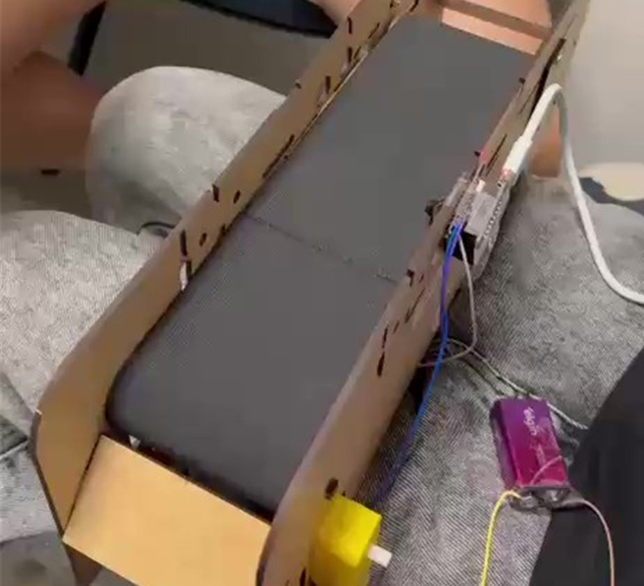
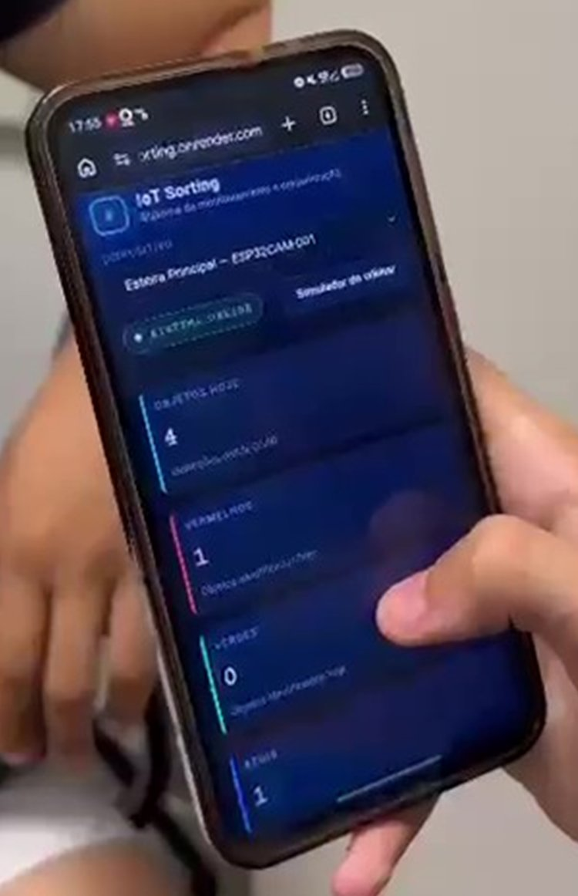
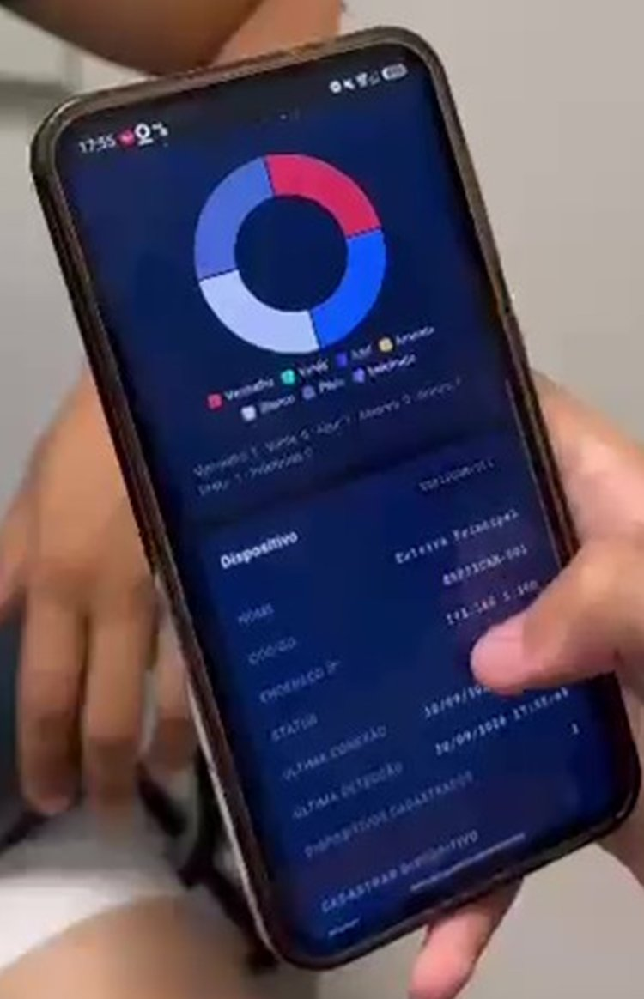
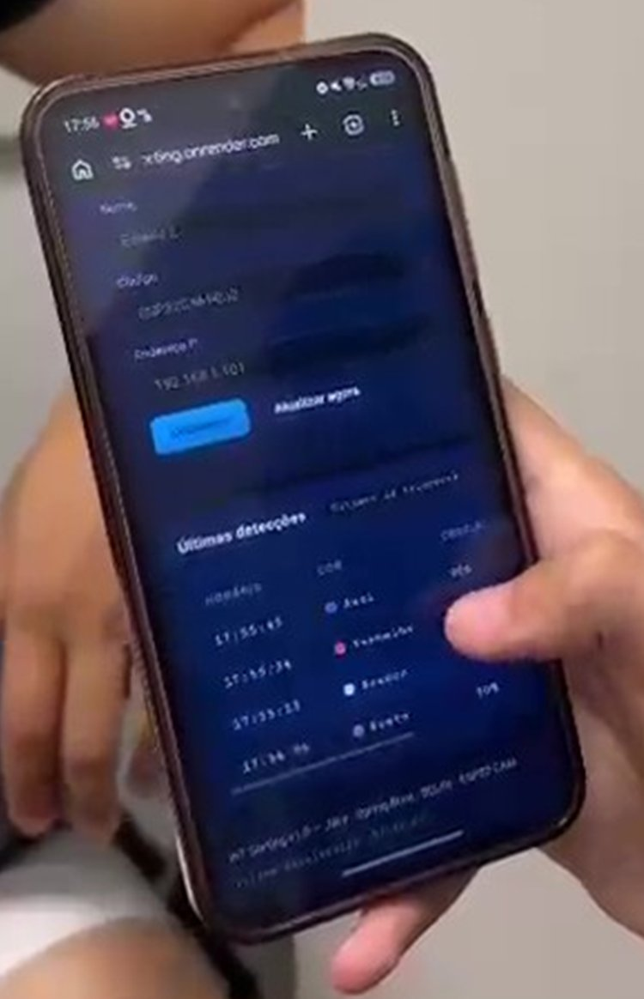

Formação Técnica / Projeto de IoT
Mini Fábrica Inteligente
Esteira com detecção de cores, banco de dados e painel de acompanhamento.
O desafio
Fazer uma linha de produção pequena que registra cada objeto que passa.
Objetivo
Detectar a cor dos objetos na esteira, guardar os registros e mostrar os resultados em um painel simples de consultar.

Vídeo do projeto
Demonstração do projeto em grupo: os objetos passam pela esteira, e o painel "IoT Sorting" mostra as detecções no celular.
Como funciona
- A esteira leva o objeto.
- O dispositivo ESP32CAM-001, chamado de Esteira Principal, participa da identificação da cor.
- Cada detecção vira um registro com horário, cor, confiança e origem.
- Os números e o gráfico do painel acompanham os novos registros.
Painel "IoT Sorting"
- Situação da esteira e do ESP32
- Quantidade de objetos no dia e por cor
- Gráfico de distribuição
- Informações da última conexão e da última detecção
- Cadastro de novos dispositivos



Foram usados quatro objetos: preto, branco, vermelho e azul. Ao final, o painel indicava 4 objetos no dia, cada um com a sua cor na lista de detecções.
O banco de dados
Pelos campos que aparecem na tela, um modelo possível tem duas tabelas, dispositivo e detecção, ligadas pelo código do dispositivo. Assim, os dados do dispositivo não se repetem em cada registro.
| Tabela | Campos |
|---|---|
| dispositivo | código, nome, endereço IP, status, última conexão |
| detecção | horário, cor, confiança, código do dispositivo |
Exemplo de consulta para listar as detecções mais recentes primeiro:
SELECT horario, cor, confianca
FROM deteccao
ORDER BY horario DESC;O que aprendi
Com os dados da esteira, dá para saber quantos objetos passaram sem contar um por um. Numa empresa, isso ajuda a controlar a produção.